Eine Dimension ist die strukturierte und meistens hierarchische Zuordnung einzelner Variablen zueinander, welche die Daten in einer Tabelle beschreiben. Die Dimensionen bilden somit die Kanten (d.h. die späteren "Zeilen" und "Spalten") des mehrdimensionalen Würfels.
Hinweis
Die maximale Anzahl von Dimensionen betragt 112. Welche Datenbereiche hierbei zur Verfügung stehen, ist (neben dem Cube-Typen) abhängig von der eingesetzten Lizenz:
Lizenz "WinLine BI BUSINESS"
Es stehen die Bewegungsdaten
gemäß Cube-Typ zur Verfügung.
Lizenz "WinLine BI CORPORATE"
Neben den Bewegungsdaten
stehen (ebenfalls abhängig vom Cube-Typ) diverse Stammdatenbereiche der WinLine
zur Verfügung.
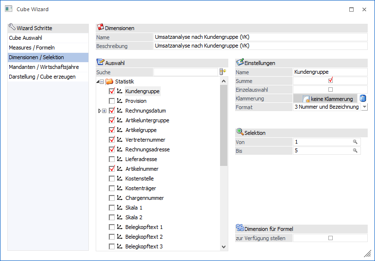
Für die verschiedenen Cube-Typen stehen verschiedene "alphanumerische Daten" (Dimensionen) zur Verfügung, wobei sich die Auswahl in folgende Bereiche unterteilen:
ü Auswahl
ü Einstellungen
ü Selektion
ü Artikel
ü Erweiterte Einstellungen
ü Dimension für Formel
Auswahl
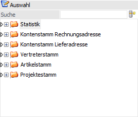
In diesem Bereich findet die eigentliche Auswahl der Dimensionen statt.
Ø Suche
Durch Eingabe eines Suchbegriffs werden in der Baumstruktur nur die passenden Dimensionen angezeigt.
Ø aktive Dimensionen
Wenn der Button aktiviert wird, dann werden nur alle ausgewählten (aktivierten) Dimensionen in der Baumstruktur angezeigt.
Ø Baumstruktur
In der Baumstruktur kann gewählt werden, welche Spalten bzw. Zeilen im Cube dargestellt werden sollen. Die Definition der Dimensionen findet dabei durch Aktivierung der Checkboxen statt.
Beispiel
Es soll eine Verkaufsanalyse erzeugt werden, in welcher die Umsätze nach "Artikelgruppen" und pro "Vertreter" aufgelistet werden können. Hierfür müssen zumindest die folgenden Dimensionen aktiviert werden, da diese sonst im späteren Cube nicht zur Verfügung stehen:
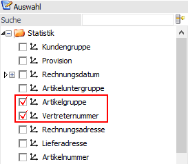
Einstellungen
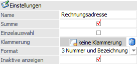
Im Bereich "Einstellungen" können für die ausgewählte Dimension grundsätzlich Einstellungen vorgenommen werden.
Ø Name
Im Feld "Name" kann die Bezeichnung der Dimension frei definiert werden.
Ø Summe
An dieser Stelle kann definiert werden, ob für die Dimension eine Summe im Cube gebildet werden soll.
Hinweis
Die Summenbildung kann auch im Olap Viewer per rechter Maustaste (Option "Summe anzeigen") jederzeit aktiviert bzw. deaktiviert werden.
Beispiel
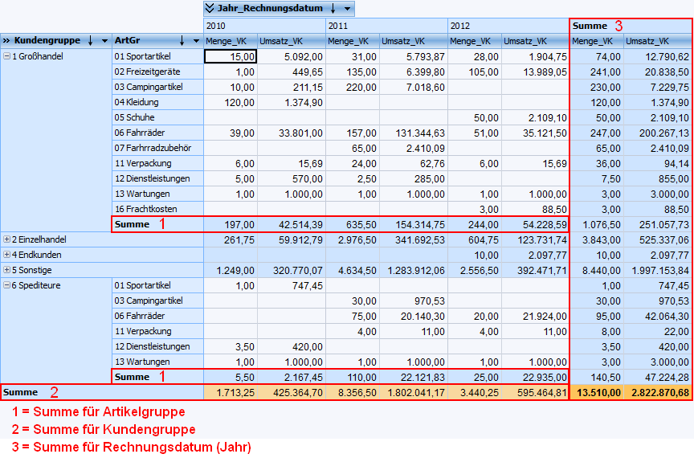
Ø Einzelauswahl
Durch die Einzelauswahl werden im Olap Viewer nicht mehr alle Daten einer Dimension auf einmal angezeigt, sondern immer gezielt ein Datensatz. Die Auswahl des Datensatzes wird dabei im Olap Viewer vorgenommen.
Beispiel
Es soll ein Cube über die Umsätze nach Kundengruppe erstellt werden. Um eine übersichtliche Auswertung zu erhalten, wird bei der Dimension "Kundengruppe" die Einzelauswahl aktiviert.
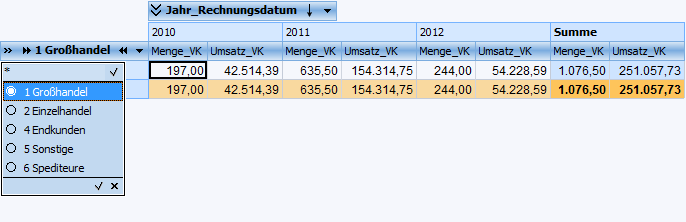
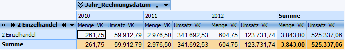
Ø Klammerung
Durch eine Klammerung können zwei Dimensionen zu einer Dimension verbunden werden. Ein Aufheben der Klammerung ist dabei per Lösch-Symbol möglich.
Hinweis
Es können immer nur zwei Dimensionen miteinander verbunden sein. Die Zuordnung einer dritten Dimension ist nicht möglich.
Beispiel
Die Dimensionen "PLZ" und "Land" sollen in einer Dimension dargestellt werden:
ü 1 - Dimension aktivieren
Es
wird zunächst die Ziel-Dimension "PLZ" aktiviert.
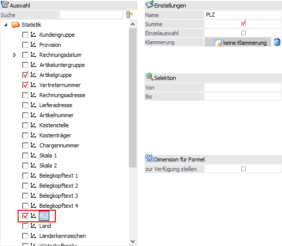
ü 2 - Dimension zuordnen
Als
nächstes wird die Zusatz-Dimension "Land" per Drag & Drop auf das Feld
"Klammerung" der Ziel-Dimension gezogen.
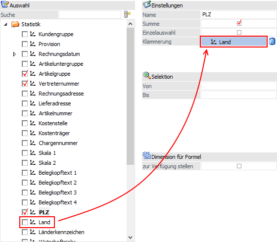
ü 3 - Ergebnis im Olap Viewer
Im
Olap Viewer wird nun in der Dimension "PLZ" auch das entsprechende Land
angezeigt.
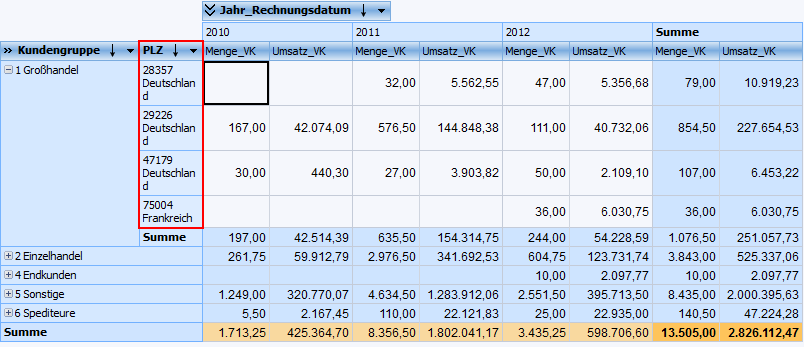
Ø Format
Handelt es sich bei der Dimension um einen Datumsbereich (z.B. Rechnungsdatum oder Buchungsdatum), so kann dieser in einzelne Abschnitte aufgeteilt werden:
ü 0 - Jahr, Quartal, Monat, Tag
ü 1 - Jahr, Quartal, Monat
ü 2 - Jahr, Monat, Tag
ü 3 - Jahr, Monat
ü 4 - Jahr, Woche, Tag
ü 5 - Jahr, Woche
ü 6 - Datum lt. Ländereinstellung
Zusätzlich wird diese Einstellung auch in der Baumstruktur angezeigt.
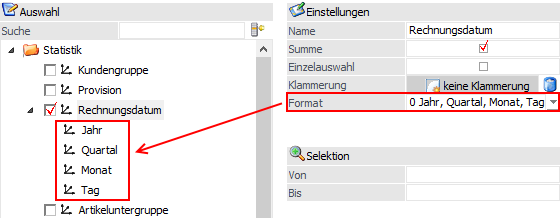
Beispiel
Cube mit der Formateinstellung "1 - Jahr, Quartal, Monat" bei Rechnungsdatum.
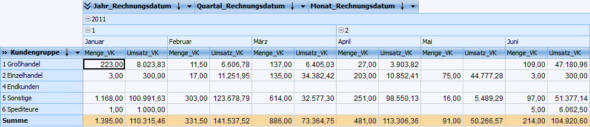
Bei vielen weiteren Dimensionen (wie z.B. Kontonummer, Artikelnummer, Kundengruppe, Artikelgruppe, Vertreter etc.) kann folgendes gewählt werden:
ü 1 - nur Nummer
ü 2 - nur Bezeichnung
ü 3 - Nummer und Bezeichnung
Hinweis
Standardmäßig wird die Option "3 - Nummer und Bezeichnung" vorgeschlagen.
Beispiel
Einstellung "3 - Nummer und Bezeichnung" bei der Dimension "Artikelgruppe":
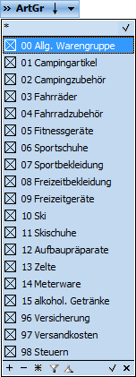
Ø Inaktive Anzeige
Bei Dimensionen des Typs "Personenkonto" kann an dieser Stelle definiert werden, ob die inaktiven Konten ebenfalls im Cube angezeigt werden sollen.
Hinweis
Die Anzeige von inaktiven Konten kann auch im Olap Viewer per rechter Maustaste (Option "Inaktive ausblenden") jederzeit aktiviert bzw. deaktiviert werden.
Selektion
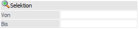
Im Bereich "Selektion" kann auf einen festen Datenbereich einer Dimension eingegrenzt werden.
Ø Von / Bis
An dieser Stelle kann eine Selektion auf bestimmte Datenbereiche vorgenommen werden.
Artikel
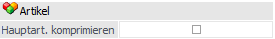
Im Bereich "Artikel" kann die Darstellungsart von Dimensionen des Typs "Artikel" bestimmt werden.
Ø Hauptart. komprimieren
Durch Aktivierung der Option werden im Cube (bei Hauptartikeln mit Ausprägung) nicht mehr die einzelnen Ausprägungen dargestellt, sondern nur noch der Hauptartikel.
Beispiel
Die Option "Hauptart. komprimieren" wurde nicht aktiviert.
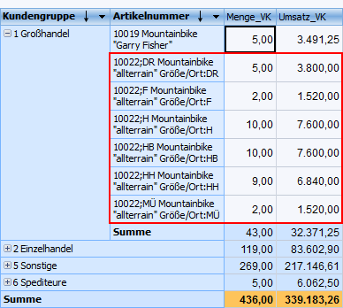
Die Option "Hauptart. komprimieren" wurde aktiviert.
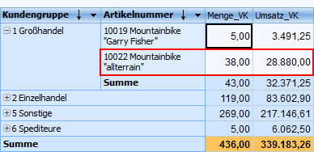
Erweiterte Einstellungen
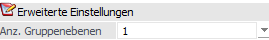
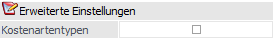
Im Bereich der "Erweiterten Einstellung" kann die Darstellungsart von Dimensionen aus dem Bereich der Kostenrechnung bestimmt werden.
Ø Anz. Gruppenebene
Diese Funktion steht für die Dimensionen "Kostenträger-", "Kostenarten-", und "Kostenstellengruppe" zur Verfügung. Über die Auswahl in der Auswahllistbox kann die Tiefe der Gliederung für die Auswertung bestimmt werden.
Beispiel 1
In der Kostenrechnung sind 5 Ebenen der Kostenartengruppen angelegt; diese stehen auch in der Auswahllistbox zur Verfügung.
Wird nun die Ebene 3 gewählt, so ist die Kostenartengruppe 1 eine Dimension, die Kostenartengruppe 2 eine Dimension und die Kostenartengruppe 3 eine weitere Dimension.
Hinweis
Für Statistikauswertungen, bei denen die Artikeluntergruppe als Dimension verwendet wird (die ebenfalls bis zu 5-stufig sein kann), wird jede Artikeluntergruppenebene IMMER als eigene Dimension ausgegeben!
Dieses hat zur Folge, wenn die Artikeluntergruppenebenen gleichzeitig ausgewertet werden und Artikel jedoch nur der obersten bzw. zweiten Ebene zugeordnet sind, die Werte der nachfolgenden Ebene nicht der Summe der vorhergehenden Ebene entsprechen würden. Daher wird für solche Artikel eine sogenannte "diverse" Artikeluntergruppe generiert.
Beispiel 2
ü Oberste Ebene = Sportgeräte
ü Zweite Ebene = Bekleidung
ü Unterste Ebene = Freizeitbekleidung, Sportbekleidung
Sind nun Artikel vorhanden, die der Artikeluntergruppe der zweiten Ebene (Bekleidung) zugeordnet sind, wird als unterste Ebene eine eigene Artikeluntergruppe mit dem Namen der übergeordneten Gruppe + der Bezeichnung "diverse" hinzugefügt:
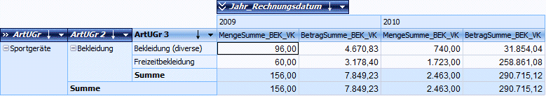
Gleich verhält es sich mit der obersten Artikeluntergruppe. Gibt es Artikel, die nur der obersten Ebene zugeordnet sind, werden für die weiteren Unterebenen eigene "diverse" Artikeluntergruppen erzeugt:
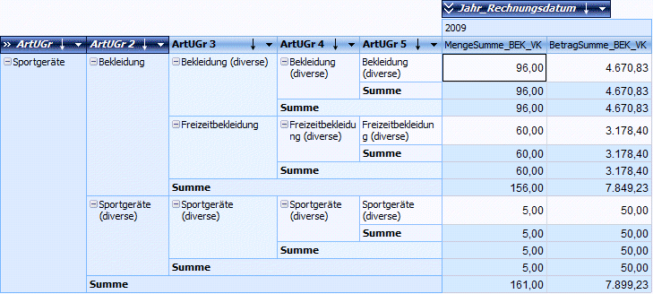
Ø Kostenartentypen
In der Kostenrechnungsanalyse kann bei der Dimension "Kostenarten" durch diese Option bestimmt werden, ob im Cube auch detailliert nach Kostenartengruppen (Einzelkosten, Gemeinkosten, Erlöse, Umlagekosten etc.) ausgewertet werden soll.
Beispiel 3
Die Option "Kostenartentypen" wurde aktiviert.
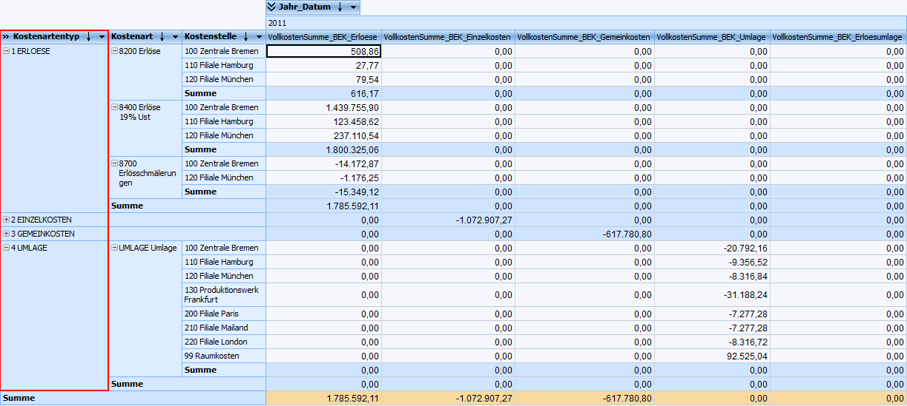
Dimension für Formel
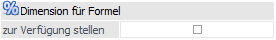
In dem Bereich "Dimension für Formel" kann bestimmt werden, ob Dimensionen bei einer Formelerstellung zur Verfügung stehen sollen.
Ø zur Verfügung stellen
Durch Aktivierung der Option "zur Verfügung stellen" können Dimensionen bei der Erstellung von Formeln berücksichtigt werden (den Dimensionen wird hierfür eine "Nummer" zugewiesen).
Beispiel
Die Dimension "Länderkennzeichen" (abgekürzt "LKZ") wird für die Formelberücksichtigung zur Verfügung gestellt, wodurch den Dimensionen jeweils eine Nummer zugewiesen wird, z.B. "A(1)", "CH(2)", "D(3)", etc.. Durch die Formel "If ($dimval@LKZ == 1, 1000, 0 )" wird nun definiert, dass bei einem Länderkennzeichen "1" (hier: "A") die Formelspalte mit "1000" (sonst "0") befüllt wird.
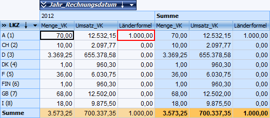